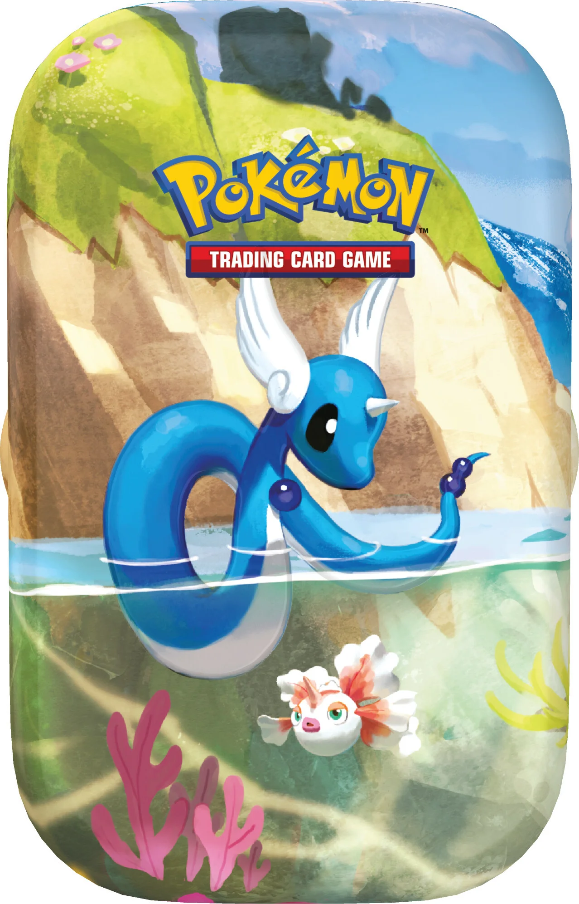
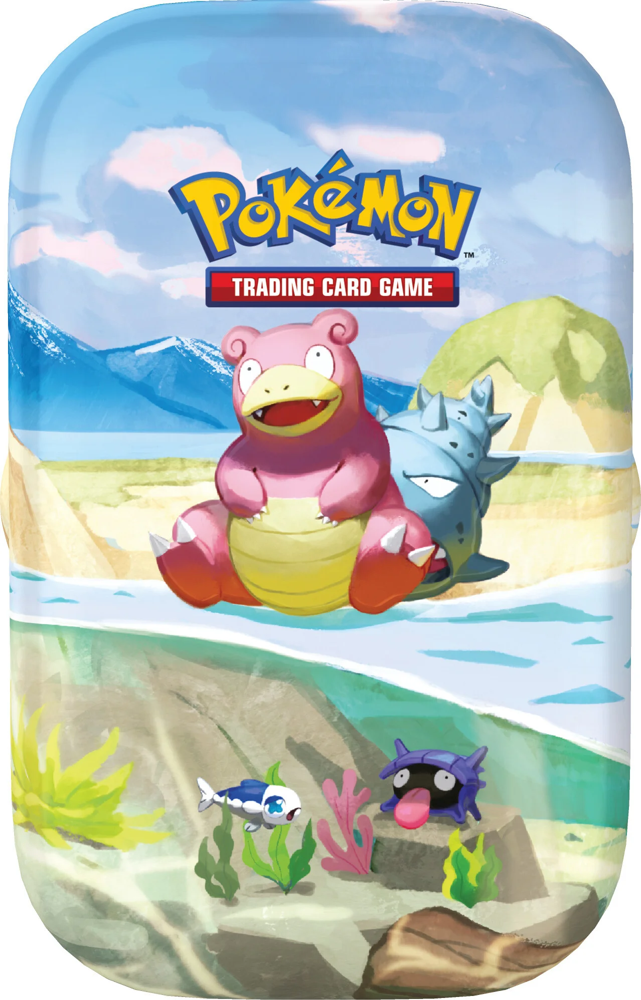
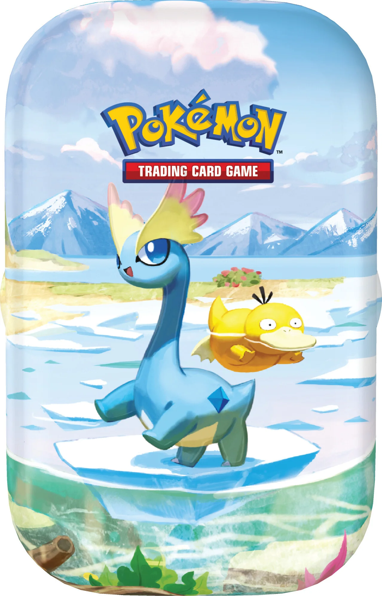
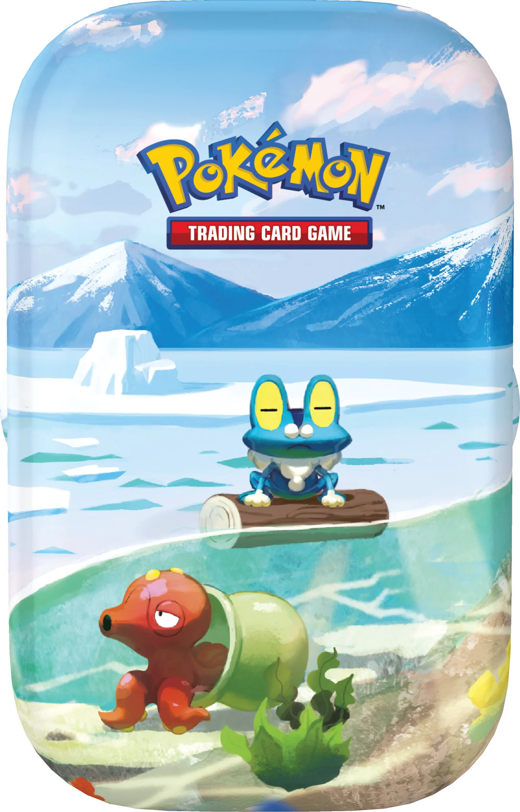
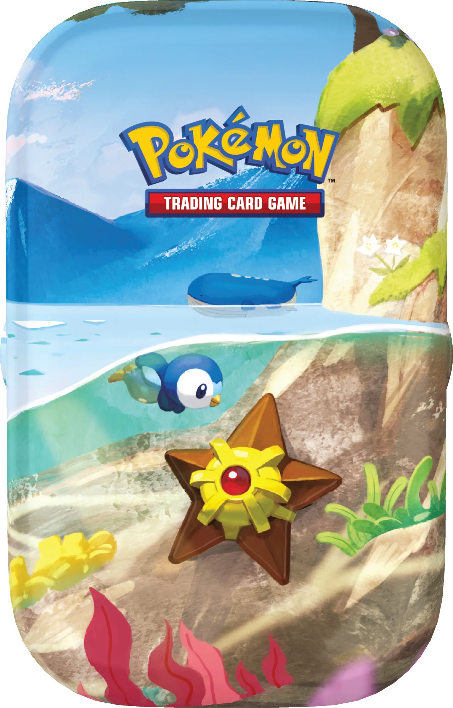

Nieuwe Wonderful Waters Mini Tins op komst
Er zijn nieuwe Pokémon TCG Mini Tins aangekondigd onder de naam Wonderful Waters! Volgens de aankondiging verschijnen ze op 29 januari 2027. Een leuke toevoeging voor verzamelaars die gek zijn op de kleine blikjes met verschillende illustraties. 🌊
Bekijk de vijf Wonderful Waters Mini Tins





Wat zit er in een Wonderful Waters Mini Tin?
- 2 Pokémon TCG-boosterpacks
- 1 stickervel
- 1 art card met de illustratie van het blikje
- 1 codekaart
Welke boosters er precies in zitten, is helaas nog niet bekend. Bij Mini Tins gaat het vaak om boosters van eerder verschenen sets. Zelf gok ik bijvoorbeeld op Pitch Black en Delta Reign, maar dat is op dit moment echt alleen een verwachting, geen bevestigde inhoud.
Wat gaan de Mini Tins kosten?
De aangekondigde Amerikaanse adviesprijs is $9,99 per blikje. Maar we weten inmiddels allemaal dat de prijzen in winkels tegenwoordig regelmatig hoger liggen dan de adviesprijs. Het is dus nog even afwachten wat Nederlandse webshops en winkels voor de Wonderful Waters Mini Tins gaan vragen.
Mijn eerste indruk
Ik ben vooral benieuwd naar de verschillende artworks van de blikjes! Mini Tins zijn altijd leuk om te verzamelen, maar of ik ze ook ga kopen, hangt voor mij natuurlijk af van de uiteindelijke Nederlandse prijs én welke boosters erin blijken te zitten. 💗
Let op: dit artikel is gebaseerd op de eerste aankondiging. Inhoud, beschikbaarheid en prijzen kunnen nog veranderen. De genoemde boosters zijn mijn eigen gok.